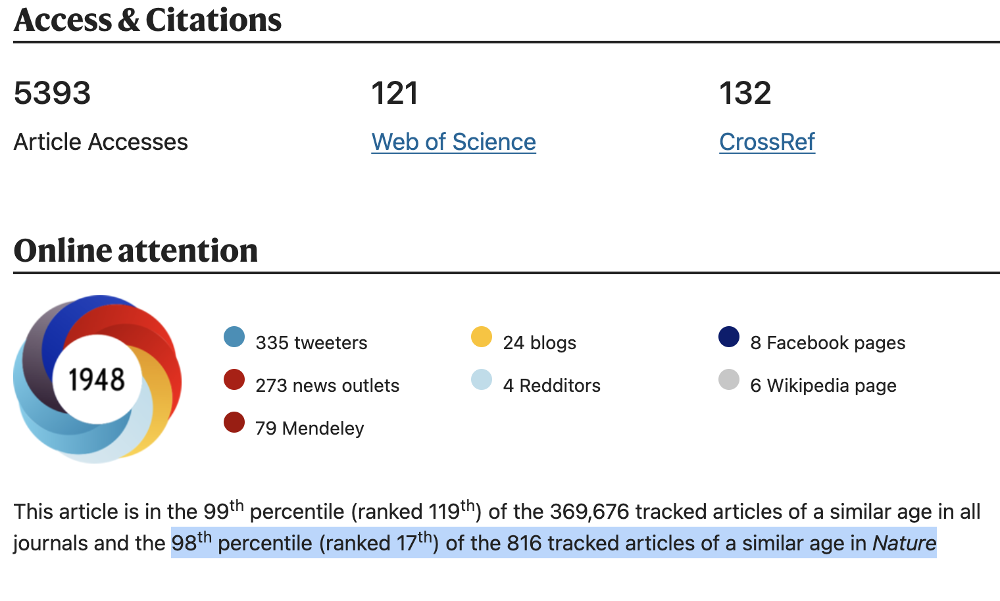
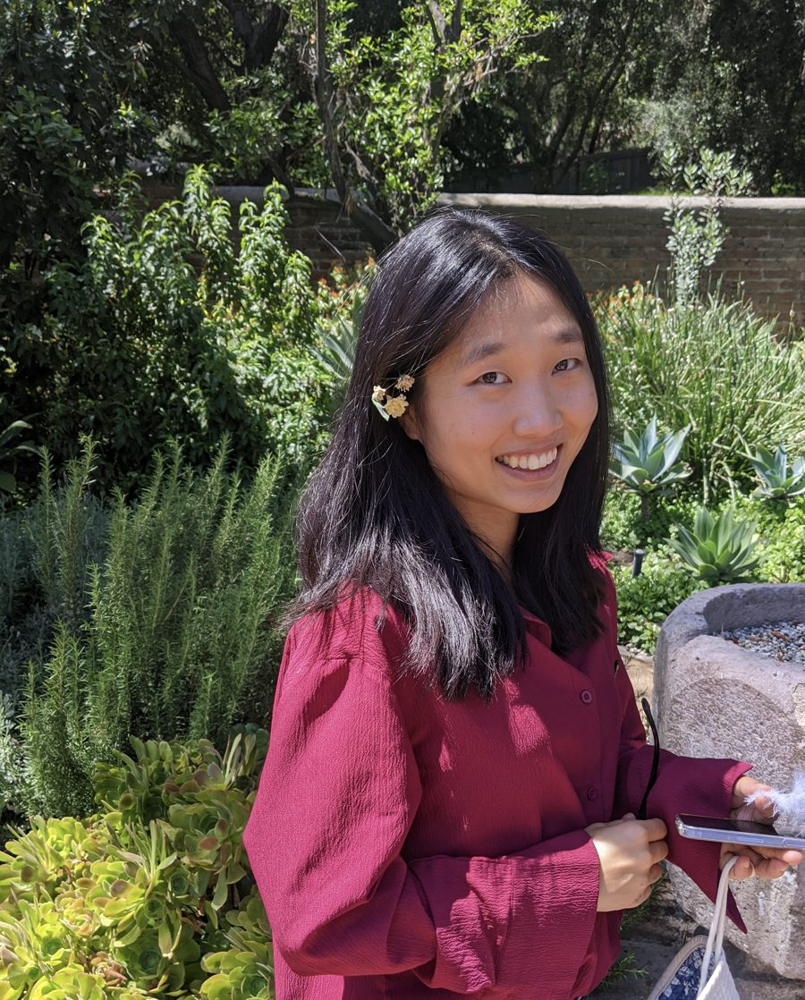
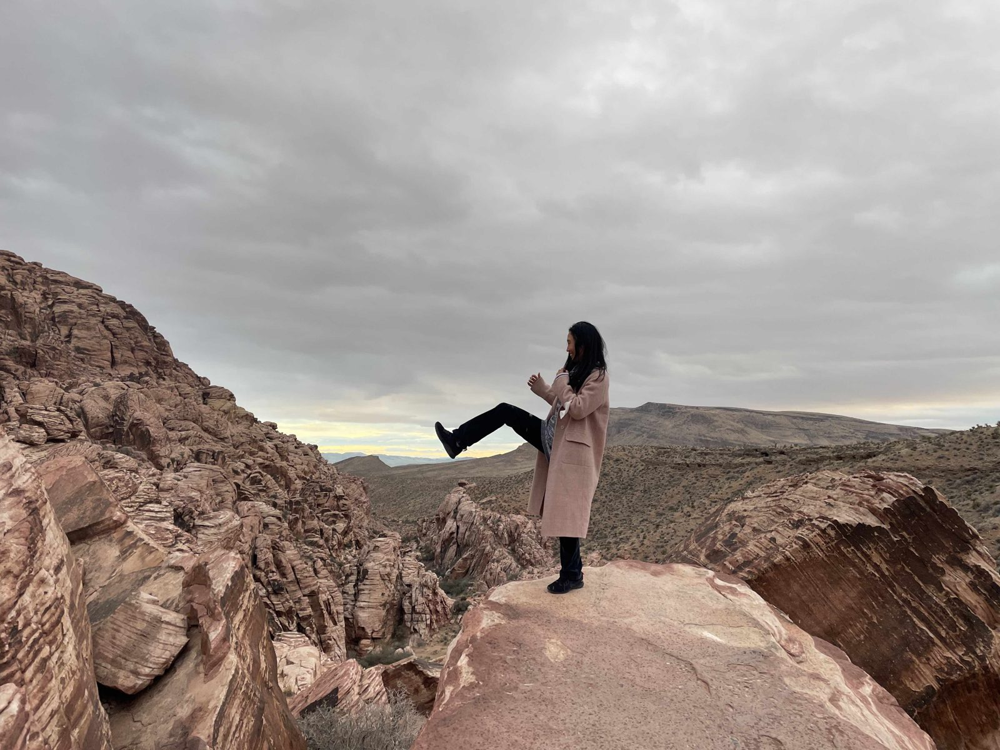
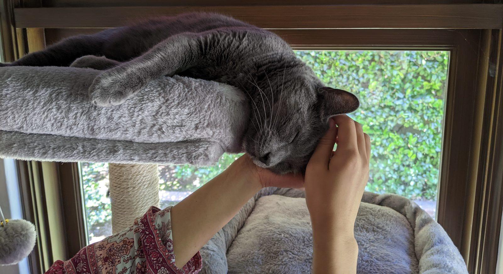

Using CHIME/FRB data, I identified a 16-day periodicity in FRB 20180916B. The figure shows the burst activity folded on the measured period. (Nature 582, 351; CHIME/FRB Collaboration, Li as corresponding author)



Dongzi Li studies compact objects through radio transients, with a focus on fast radio bursts (FRBs) and pulsars. Her research combines theory and observation, and uses these sources to probe cosmic baryons and magnetized plasma structures. She led the discovery of the first periodic FRB (Nature 582, 351), opening a new window on source environments and emission physics, and pioneered the use of radio transients to model active magnetized environments (Nature 618, 484). She is a member of the CHIME/FRB collaboration and the FAST key project.
Research interests: neutron stars, fast radio bursts, magnetic fields, baryon distribution
Prospective Ph.D. students and postdoctoral researchers are welcome to contact me at dzli@tsinghua.edu.cn.
Using CHIME/FRB data, I identified a 16-day periodicity in FRB 20180916B. The figure shows the burst activity folded on the measured period. (Nature 582, 351; CHIME/FRB Collaboration, Li as corresponding author)

We identified rare and diverse polarization effects in a pulsar binary system. These features resemble polarization behavior seen in some repeating FRBs, suggesting that related sources may also arise in binary environments. The figure below shows that the circular polarization, V, reverses sign as the line of sight approaches the companion. I modeled this effect as pulsar radio emission propagating through the companion's poloidal magnetic field. (Nature 618, 484–488, Li et al.)

I practice karate, though I am still far from the flying kung fu masters of television.

I love trees and cats, although the latter do not always return the feeling.

With deep gratitude to my parents.